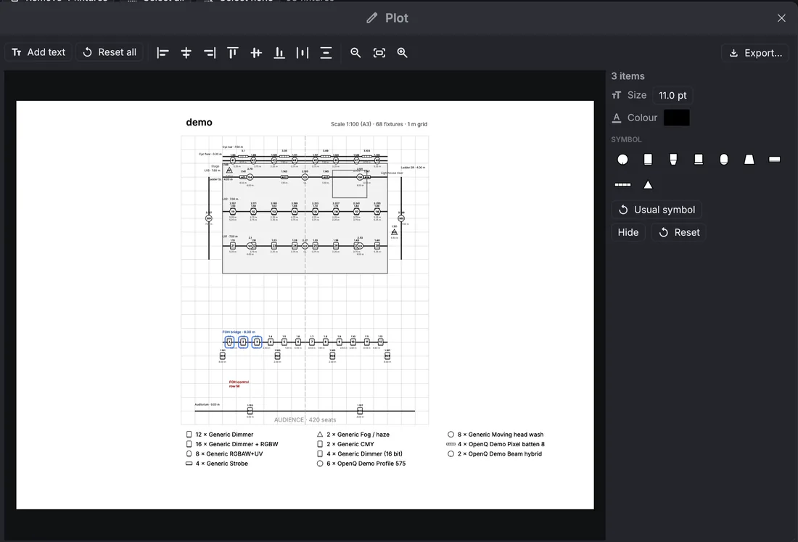
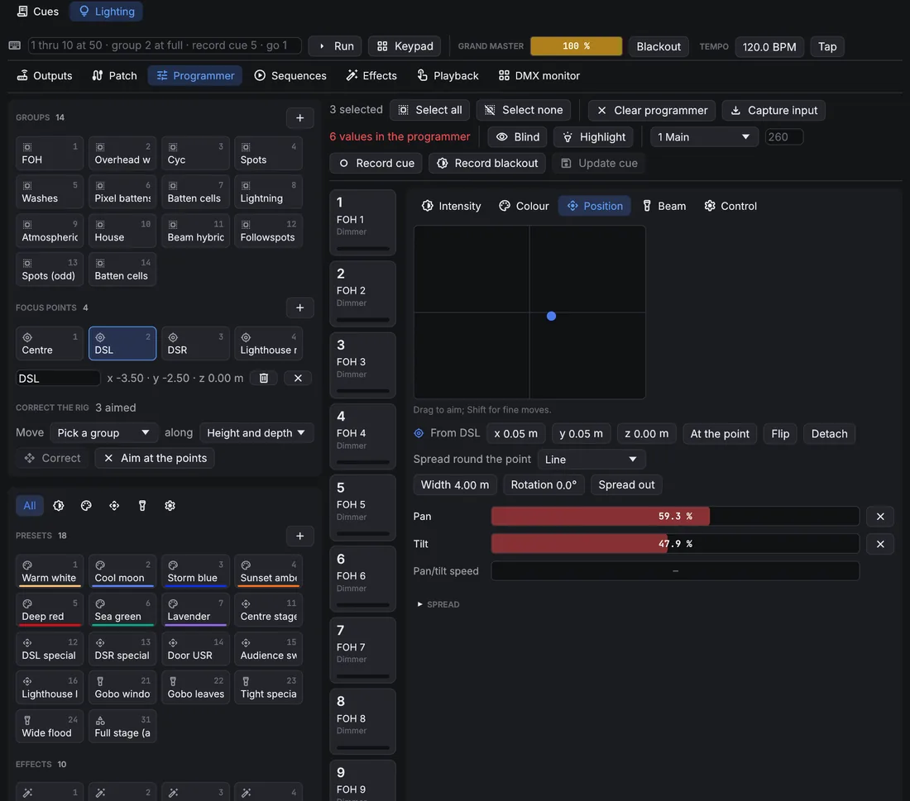
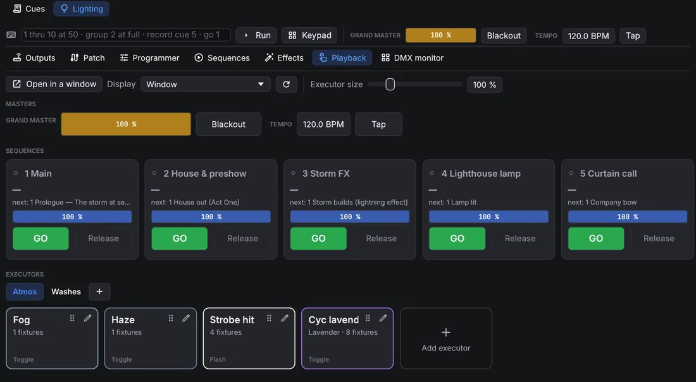

Lighting
5.1Design
OpnQ drives lighting over DMX. The lighting design (patch, groups, presets, effects and sequences of lighting cues) is kept apart from the cue list, in the Lighting workspace: switch between and Cues above the cue list. The design can only be changed in Edit mode. In Show mode the Lighting workspace shows the Playback page and the DMX monitor.
Light cues
A Light cue in the cue list plays the lighting design;
it holds no levels of its own. On its Settings tab choose the Action: GO lighting cue fires a lighting
cue of a sequence (shown as sequence/cue) with that cue's own fades, and Release fades one sequence, or
all of them, out over the given time. Light cues fire together with sound and video, so a lighting change can sit on the
same GO as an effect or a video.

A Stop cue aimed at a Light cue releases that cue's sequence. With Stop cues without a target also fade the lighting out (Sequences page), Stop cues without a target release every sequence too, over the Release fade. Stop all and Panic (Esc) stop sound and pictures only: the lighting stays as it is, so a stopped cue list never blacks out the stage.
Lighting fades only through Light cues: a lighting cue fades with its own times, and the next lighting cue or a Release takes it on from there. Fade cues don't act on Light cues.
Patch
The Patch page has three views: Sheet, Plan and Fixture types. The sheet lists the fixtures. To add some (on the Sheet or the Plan), pick a fixture type and mode in Add fixtures, set how many, the first fixture number, the universe and the start address (auto takes the next free one), and click Add. Every cell of the sheet can be edited: name, type, mode, universe, address, position and rotation, and pan or tilt reversal. Overlapping addresses and duplicate numbers are flagged above the sheet. A fixture with several DMX inputs (a break per input, set in its fixture type) gets one address per break: click its slot count to set the universe and address of the other breaks.

Fixtures with several cells, such as LED bars, are controlled cell by cell too: cell 3 of fixture 101 is 101.3.
Plan shows the rig from above. Click to select (Ctrl adds), drag to move the selection, drag empty space to
pan and scroll to zoom. Focus points show as green crosses; drag one to move it. With fixtures selected, Arrange spreads them along a line, an arc or a grid.

To make the plan look like the real venue, draw on it: choose Bar or Rectangle next to Draw and drag on the plan. Bars are pipes, trusses or booms, with a trim height; rectangles are the stage, risers or set pieces. Click a bar, or the outline of a rectangle, to select it: drag it to move it, drag its white handles to change its ends or corners, and set its name, exact coordinates and height in the row above. Delete over the plan removes it. With fixtures and a bar selected, Hang spreads the fixtures evenly along the bar at its height. Drag the label of a bar or a rectangle to move it out of the way; the plot puts it there too, and in the row above puts it back.
Fixture types
OpnQ comes with generic types (dimmer, RGB, RGBW, CMY, moving heads, strobe, fog) and a library of about 650 manufacturer profiles (the Open Fixture Library plus some manufacturer GDTF files), listed under Manufacturer profiles in Fixture types. Search for a fixture, open it and use Add to this show; saving it makes a copy of your own. Import fixture… (on the
Sheet and the Plan) reads
Open Fixture Library (.json), GDTF (.gdtf), QLC+ (.qxf) and OpnQ
(.oqfixture) files. Imported types are copied into the show and saved in your fixture library, so they are there
for the next show. Fixture types opens the editor: channels and their attributes, 16-bit fine channels, defaults,
the value used by Highlight, and ranges: the named parts of a channel, such as the slots of a colour wheel or
a gobo wheel. A range can have a colour and a picture (Image (gobo)), shown in the programmer's drop-down for that channel;
GDTF files bring the gobo pictures and the colours of the fixture's LEDs, which the colour picker uses. For moving heads the
editor sets the pan, tilt and zoom angles at the lowest and the highest DMX value (a file that turns the other way has them
reversed); GDTF files also bring where the yoke, the head and the lens sit, so OpnQ aims from the lens as visualisers draw
it.

MVR files carry a rig between programs. Import MVR… (on the Sheet and the Plan) adds the fixtures of a file from a visualiser, a CAD program or another desk, with their positions, addresses and trusses (as bars and shapes on the plan). Fixture types are matched by name with the show and your fixture library; the others come from the GDTF files inside the MVR. On the Plan view, Export MVR… saves the patch with positions and the GDTF file of every type, so visualisers and other desks can import it.
Plot
Plot… on the Plan view opens the plot editor: the printed page as it will look, with the bars and rectangles, fixture symbols, numbers, addresses, a title and a legend. Labels never cover each other: where fixtures are close together, their labels move apart.
- Drag any item to move it. Click selects (Shift adds, dragging on empty paper selects a band); the column on the side changes the selected items' text, size and colour, hides them or puts them back.
- With several items selected, the alignment buttons line up their edges or centres, or space three or more evenly.
- Each fixture type gets a symbol guessed from its name (PAR, profile, fresnel, moving head, flood, strobe, effect…); pick another one for the whole type in the legend, or for a single fixture.
- Add text puts a free note on the page.
- Export… saves it as a PDF (one A3 sheet, at the largest standard scale that fits, such as 1:50) or an SVG drawing; pick the type in the save dialog.
The changes are saved with the show, so the next export keeps them.

5.2Programming
Programmer
Select fixtures on their tiles: a click adds a fixture to the selection (a second click takes it out), dragging across tiles adds all of them, and a right-click selects only that fixture. Groups and the command line select too. The panel on the right sets their values, one page per feature: Intensity, Colour, Position (drag the pad to aim), Beam and Control. Drag a bar to set a value, or scroll over it for 1 % steps. Channels with ranges have a button per range, such as each gobo. Attributes that change smoothly (dimmer, colour mixing, pan and tilt, zoom, focus, iris, frost, fog…) always get a bar; if the fixture file names ranges of them, the ranges are a picker below it.
The colour picker shows every colour you can see, and brightens the ones the selected fixture can make: the shape between its LED colours. Colours outside it are dimmed, and a click there takes the nearest colour it can make. Each fixture mixes the colour with its own LEDs. The LED colours come from the fixture type (GDTF files have them); without them OpnQ uses typical LED colours, and says so under the picker.

Programmer values override the playback while they are set, and they are what Record cue stores. Clear programmer lets playback take over again.
- The column on the left holds the groups, presets and effects as cards. The buttons at its top show only the presets and effects of one feature (intensity, colour, position, beam, control).
- Groups: stores the selection as a group; click a group to select it (Ctrl adds); right-click it to overwrite or delete it.
- Presets: stores the selected fixtures' values as a preset: all attributes, or only the feature the filter shows. Clicking a preset applies it. Cues keep a link to the preset, so changing the preset changes every cue that uses it.
- Spread sets a value fanned across the selection, for example from 0 to 100 %, optionally from the centre out.
- Blind programs without changing the output. Highlight puts the selected fixtures at open white and full (not recorded); the arrow steps through them one by one.
- Capture input takes what the DMX inputs receive into the programmer, so a look built on another desk can be recorded here.
Focus points
A focus point is a named place on stage, such as centre stage, the downstage corners or a riser. Cues aim moving heads at a point, not at pan and tilt values: OpnQ works the pan and tilt out from each fixture's position, rotation and angles. Move the point (drag it on Patch → Plan) or a fixture, and every cue aimed at it follows.

- Make one: aim fixtures at a place by hand, then in Focus points puts a point there (on the floor for one fixture, where the beams cross for several).
- Aim at one: click the point's card (or
point 2on the command line). The selected fixtures turn to it, and the row under the cards edits its name or deletes it. - Aim beside it: move a fixture aimed at a point by hand and it keeps the point: the Position page shows the offset from the point (x across, y depth, z height), and the cue still follows the point. At the point puts the offset back to 0, Detach keeps the aim as plain pan and tilt, Flip reaches the same place the other way round (pan half a turn round, tilt the other side).
- Spread round the point (two fixtures or more): lays the selected fixtures out round their point as a Line, an Arc or a Circle, in the order they were selected, with its width or radius and its rotation. The cue keeps the form and follows the point.
Correct the rig: when the real rig doesn't hang where the patch says, aim fixtures at a point, then move them by hand onto the real place. Pick the group that hangs together (a truss) and which axes to correct (height, height and depth, or all), and Correct moves those fixtures in the patch, and the plot bar they hang on, so their beams meet the points. Every cue aimed at points follows; the points stay where they are. Aim at the points puts the moved fixtures back on their points.
Command line and keypad
The command line above the pages takes desk-style commands; Keypad opens on-screen keys for a touch screen
(Clear line empties the command line).
Keywords can be shortened to two letters (th, gr, rec).
| Command | Does |
|---|---|
1 thru 10 at 50 | Selects fixtures 1 to 10 at 50 % intensity. > also means thru, @ means at. |
101.1 thru 101.12 at 80 | Cells 1 to 12 of fixture 101. |
group 2 + 7 - 3 at full | Group 2, plus fixture 7, minus fixture 3, at full. out is 0. |
1 thru 4 preset 3 | Applies preset 3. |
effect 2 | Runs effect 2 on the selection. |
201 thru 208 point 2 | Aims the selection at focus point 2 (also at point 2). |
gobo star, wheel 3 | Picks a range by name (the start is enough) or number. |
record cue 5 / 2 | Records the programmer as cue 5 of sequence 2. Also record group 4, record preset 6. |
update, clear, blind, highlight | Same as the buttons. |
go 2, go cue 5 / 2, release 2 | Plays sequences. |
delete cue 5 / 2 | Deletes a cue, a group or a preset. |
Effects
An effect moves one attribute of a set of fixtures with a waveform: sine, triangle, square, ramps, random, or a circle for pan and tilt. Speed is in Hz, or per beat with Follow tempo. Size and Base set the swing; it runs around the cue's value or, with Absolute, around the base. Phase spread staggers the fixtures, Groups moves several fixtures together and Wings mirrors the pattern. The preview shows the result across the fixtures. With Size follows the sound the effect grows with how loud OpnQ is playing: Gain sets how much, Floor how much is left in silence, and the bar next to them shows the level now.

Run an effect from the programmer (the effects pool, or effect 2), then record it into a cue. It keeps running
through the following cues until a cue stops it.
Effects can be shared as .oqfx files: Export effect file… writes one, the
button on the effects pool imports them. Save to library puts an
effect in your effect library, which every show offers under Library.
Formula effects
For patterns the waveforms can't make, write a formula. Press (New formula effect) on the effects pool, edit the formula on the Formula card and press Run (or Ctrl+Enter). OpnQ works the formula out into a table: for every pattern row and every step of one cycle, it sets the attributes you name. The first fixture plays row 0, the next one row 1 and so on, starting again after the last row. Speed, size, phase spread and the other settings still apply on top. A formula is only arithmetic: it can't open files or loop, and it never runs during the show; only the table it made plays.
# A rainbow running across eight fixtures, with a slider for the saturation.
param sat 1 0..1
effect "Rainbow run" steps 64 width 8 smooth
red, green, blue = hsv(t + row / width, sat)One instruction per line; # starts a comment and capitals don't matter.
| Line | What it does |
|---|---|
param sat 1 0..1 | A slider on the Formula card: name, starting value, range (0 to 1 if left
out). Add int for whole numbers. Sliders go before the first effect; moving one works the formula out again. |
effect "Name" steps 64 width 8 smooth | Starts an effect: samples per cycle (1 to 4096),
pattern rows (1 to 512), and smooth to blend between samples (leave it out for chases that snap). A formula
can make several effects: the first one is the effect you are editing, the others are added to the pool. |
let k = sine(t) | Keeps a value for the lines below it. |
red, green, blue = … | Sets attributes, each once per effect: dimmer,
red, pan, tilt, zoom, gobo_rotation, extra3…
Levels go from 0 to 1 (anything outside is clipped). |
Values are numbers: t goes from 0 to 1 over the cycle, step counts the steps (from 0),
row is the pattern row, steps and width are the effect's sizes, and the sliders and
let names. Use + - * / % ^, brackets, comparisons (< <= == != >= >, which give 1
or 0) and and, or, not.
| Function | Result |
|---|---|
sine(x), triangle(x),saw(x), ramp_down(x) | The waveforms,
0 to 1 over one cycle (x in cycles, usually t). |
square(x, duty) | 1 for the first duty of the cycle (half if left out), then 0. |
wave(x) | A sine wave from −1 to 1, x in cycles; wave(x + 0.25) is the cosine. |
hsv(hue, saturation, value) | Red, green and blue for a colour (hue in turns of the colour
wheel). Gives three values, so it fills three attributes: red, green, blue = hsv(t). |
pick(i, a, b, c…) | Value number i of the list, from 0 (it wraps round). |
if(condition, a, b) | a when the condition isn't 0, else b. |
noise(n, seed) | A fixed random number from 0 to 1 for the whole number n (and
seed): the same every time. |
min(a, b…), max(a, b…) | The smallest or largest value. |
clamp(x, low, high) | x kept between low and high (0 and 1 if left out). |
lerp(a, b, k) | From a (k = 0) to b (k = 1). |
smoothstep(x) | 0 to 1 with an eased start and end. |
abs, floor, round, frac | Without sign, rounded down, rounded, the part after the point. |
# Every other fixture, swapping on each half of the cycle.
effect "Odd / even" steps 2 width 2
dimmer = if(step == row, 1, 0)
# Neighbouring heads swing opposite ways (Mode: Around the cue's value).
effect "Scissors" steps 64 width 2 smooth
pan = 0.5 + pick(row, 0.5, -0.5) * wave(t)A mistake shows under the editor with its line and column, and the effect keeps its last table. Shows from OpnQ 0.3 with Python script effects still play them; the old script is shown under the Formula card so it can be rewritten as a formula, or in Python as below.
Effects made in Python
Some patterns need a real program: a value that depends on the step before (a random walk, a pattern that grows),
loops, or data from elsewhere. Write those in Python on your computer and save them as an effect file. OpnQ imports it
like any other .oqfx file, as plain data: nothing runs inside OpnQ. Any Python 3 works, with no extra modules.
- Save this as
wander.py. It makes four moving heads wander at random and come back to where they started:import json import random def save_effect(path, name, attributes, steps, width, level, smooth=True, **settings): """Write an OpnQ effect file (.oqfx). level(row, step) returns one level (0 to 1) per attribute. """ n = len(attributes) values = [0.0] * (n * steps * width) for row in range(width): for step in range(steps): for col, v in enumerate(level(row, step)): at = (row * n + col) * steps + step values[at] = min(1.0, max(0.0, float(v))) table = {"attributes": attributes, "steps": steps, "width": width, "smooth": smooth, "values": values} effect = {"name": name, "shape": "Custom", "attribute": attributes[0], "table": table} effect.update(settings) with open(path, "w", encoding="utf-8") as f: json.dump({"opnq_effect": 1, "effect": effect}, f) def walk(steps, seed): """A random walk that ends where it started (no jump).""" rnd = random.Random(seed) x, points = 0.5, [] for _ in range(steps): x = min(1.0, max(0.0, x + rnd.uniform(-0.06, 0.06))) points.append(x) drift = points[-1] - points[0] return [p - drift * k / steps for k, p in enumerate(points)] STEPS, HEADS = 128, 4 pan = [walk(STEPS, seed=row) for row in range(HEADS)] tilt = [walk(STEPS, seed=100 + row) for row in range(HEADS)] save_effect("wander.oqfx", "Wander", ["Pan", "Tilt"], STEPS, HEADS, lambda row, step: (pan[row][step], tilt[row][step]), speed=0.05, relative=True, size=0.5, spread=0) - Run it:
python3 wander.py(py wander.pyon Windows). It writeswander.oqfxin the same folder. - In OpnQ, go to , press (Import effect files) and pick the file. The effect joins the pool; run it on four heads.
save_effect is the part to keep for your own effects:
- attributes: the names OpnQ stores, with capitals:
Dimmer,Red,Green,Blue,White,Pan,Tilt,Zoom,Iris,GoboRotation,Extra3… - steps: samples per cycle (1 to 4096); width: pattern rows (1 to 512). At most 16 attributes and a million values.
- level(row, step): returns one level from 0 to 1 per attribute, in the same order.
- smooth: blend between samples (
Falseholds each one, for chases). - The rest are the effect's settings, all optional:
speed(Hz),sync(follow the tempo),sizeandbase(0 to 1),relative(True= around the cue's value),spread(degrees),groups,wings. They can all be changed in OpnQ afterwards.
The last step of a cycle runs straight into the first. Make them meet,
as walk does, or the effect jumps once a cycle. OpnQ checks every file it imports and refuses one with wrong
sizes or values.
5.3Playback and outputs
Sequences
A sequence is a cue stack. Lighting cues track: a cue stores only what changes, and everything else carries on from the cues before it. Each cue has a fade, a separate down fade for intensity going down, and a delay.

- Timing per feature gives colour, position or beam their own fade and delay.
- Cue only: the cue's changes don't track; the next cue goes back to what was there before.
- Block stores every tracked value in the cue, so edits to earlier cues no longer change it. A blocked cue shows a lock in the list and the button reads Blocked; press it again to let those values track again.
- Move in black (per sequence): fixtures that are dark take their next cue's position, colour and beam before they come up, after the set delay.
- Load into programmer brings a cue back for editing; Update cue on the Programmer page stores the changes.
USITT ASCII files (.asc) bring cues from another desk: the
button next to Sequences reads the patch, cues, groups and
submasters of a file, and saves the design as one. The format holds
intensities only: colour, position and effects stay behind, and follow and link times are dropped.
Playback
The Playback page is where the lighting is run, in both modes, laid out as large cards for a touch screen:
- Masters: the grand master, blackout and the effects tempo (type it or tap it).
- Sequences: one card per sequence, with its current and next cue, a level fader, GO and Release.
- Executors: buttons that put a look on top of the sequences, such as the fog machine at 80 %, a strobe or a special. In Edit mode, Add executor makes one and the pencil edits it: its name and colour, a preset on chosen fixtures (Use selected takes the programmer's selection, or pick a group), and/or Store the programmer for the programmer's values and effects. It fades in and out over its Fade; Toggle switches it on and off with each press, Flash keeps it on only while held.
Executors sit on pages: the tabs above them, with for a new page; right-click a tab to rename or delete it. Executors on a page that isn't shown keep playing. In Edit mode, drag an executor by its handle onto another one to reorder them, or onto a tab to move it to that page. Executor size makes the cards bigger or smaller.
Open in a window puts the Playback page in a window of its own; choose a Display to have it fill a touch screen. Each computer remembers whether its window is open and where, so it comes back after a restart.

Control surfaces
A MIDI controller or an OSC app (TouchOSC, for example) can run the executors. In choose this computer's MIDI input, then add mappings: click Learn new (or the control of a mapping) and move a fader or press a button, then pick what it does. Executor bank adds faders on CC 1–8 and buttons on notes 36–43 in one go. Executors are numbered by their place in the sequence list.
- Faders: executor level, grand master.
- Buttons: executor GO, release and flash (full while held), playback executors (the buttons of the Playback page), next and previous page, blackout, release all, tap tempo, and the cue list's GO and Stop all. A button acts once per press, whether it sends notes, CC 127/0, program changes or OSC 1/0. Cues can also be fired by MIDI on their own (see MIDI triggers).
- Pages: with a page size of, say, 8, the controller's eight faders run sequences 1–8 on the first page and 9–16 on the next; the page buttons step through them, and the Playback page shows the same page of executors.
- Soft takeover: a fader that doesn't match its level (it was moved on screen, or the page changed) does nothing until it reaches the level, so nothing jumps.
- Feedback: choose a MIDI feedback output and button lights and motor faders follow the show. For an OSC app, set OSC feedback to the UDP port it listens on: levels and lights are sent back to the app that last sent a control.
- MIDI clock: with Effects follow its tempo, the effects tempo follows the clock on the MIDI input (from a DJ program or a drum machine); the BPM it reads shows next to it.
The mappings are saved with the show; the MIDI input belongs to the computer, so a remote device can use its own
controller (its moves go to the main device). OSC mappings come in through the OSC listener, which also
knows the /light/… addresses without any mapping.
Outputs and inputs
On the Outputs page add where the DMX goes: Art-Net (a node's address, or broadcast; Find devices lists the nodes on the network), sACN (multicast, or a unicast address, with a priority) or an Enttec DMX USB Pro (or compatible) interface. Each output sends a list of universes: the patch's universe on the left, the number on the wire on the right (Art-Net counts from 0). Every output runs on its own, so a slow or unplugged device doesn't hold up the others, and a lost device is reopened by itself.

Inputs receive Art-Net or sACN from another desk. Each one either merges with OpnQ's output (the highest value wins), replaces it on the universes it receives, or is kept for capture only. When several desks send the same sACN universe, the highest priority wins. OpnQ ignores its own packets, so a broadcast output doesn't come back in through an input.
An Art-Net output can send ArtSync after every frame, so nodes that support it change all their universes at the same moment. Shift-click a node in the Nodes list to send it the universes it outputs; a warning shows when the output sends a universe the chosen node doesn't have. An Art-Net input answers desks that look for nodes (ArtPoll), so desks that only send to nodes they found send to OpnQ too.
DMX monitor
The DMX monitor shows every slot of a universe as it goes out, inputs included. A yellow line marks where each fixture starts.

Remote devices and visualisers
A remote device gets the lighting design and its changes, and shows the main device's executors and DMX output; its GO and faders act on the main device. A device with the edit role can change the design too. A visualiser can follow OpnQ the same way, or read the DMX from Art-Net or sACN and the rig from an MVR export.
(also on Patch → Plan) shows the rig in OQVis, the 3D visualiser installed with OpnQ: OpnQ saves the patch as an MVR file and starts OQVis on it. Choose it again while OQVis runs and only the file is rewritten; OQVis reloads it. OQVis gets the DMX over Art-Net, sACN or its own link to OpnQ. If OpnQ can't find OQVis, it asks where the program is and remembers it.